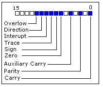

8086 Assembler Tutorial for Beginners (Part 6)
运算与逻辑指令
大多数运算与逻辑指令影响处理器的状态标记寄存器。

从上图可以看到，这是状态标记寄存器是一个16位寄存器
每一位称作一个标志位，可以取值 1 或者
0 。
- 进位标志 Carry Flag (CF) - 出现无符号（unsigned overflow）溢出该位设置成1。例如，计算
255+1（结果超出0...255）。没有溢出时该位为0。
- 零标志 Zero Flag (ZF) - 当结果为
0 时设置为1，结果不为
0 时设置为0。
- 符号标志 Sign Flag (SF) - 结果为负置1，结果为正置为0。事实上该位对于结果特别重要。
- 溢出标志 Overflow Flag (OF) -
当出现有符号数溢出设置为1。例如，计算100+50（结果超出－128－127的范围）。
- 奇偶标志 Parity Flag (PF) - 当结果操作数中1的个数为偶时置1，否则为0注意，如果结果是一个字，该标志只指示低8位。
- 辅助进位标志 Auxiliary Flag (AF) -
低4位向上进位时置1，否则为0（记录运算时第3位（半个字节）产生的进位值。例如，执行加法指令时，最高有效位有进位时置1，否则置0
- 中断标志 Interrupt enable Flag (IF) - 当cpu容许中断时为1，否则为0
- Direction Flag (DF) - 方向标志，在串处理指令中控制处理信息的方向用。当DF为1时，每次操作后使变址寄存器SI和DI减量，这样就使串处理从高地址向低地址方向处理。当DF为0时，则使SI和DI增量，使串处理从低地址向高地址方向处理。
这里有3组指令.
第一组： ADD, SUB,CMP, AND, TEST,
OR, XOR
支持如下操作数:
REG, memory
memory, REG
REG, REG
memory, immediate
REG, immediate
REG（寄存器）: AX, BX, CX, DX, AH, AL, BL, BH, CH, CL, DH, DL, DI, SI, BP, SP.
memory（内存）: [BX], [BX+SI+7],
变量,等等...
immediate（立即数）: 5, -24, 3Fh, 10001101b,
等等...
执行之后，结果经常存放在第一个操作数中。CMP和TEST指令只影响标志位，并不返回数值（这两条指令是用来在程序运行中判断的）上述指令只影响如下标志位：
CF, ZF,
SF, OF, PF, AF.
- ADD - 将第二个操作数加至第一个操作数上
- SUB - 从第一个操作数中减去第二个操作数
- CMP - 从第一个操作数中减去第二个操作数，但只影响标志位.
- AND - 两个操作数各个位逻辑与运算。运算法则如下
1 AND 1 = 1
1 AND 0 = 0
0 AND 1 = 0
0 AND 0 = 0
只有当两个操作数都是1时，运算结果才是1。
- TEST - 和上面的and 操作一样，但是只影响标志位。
- OR - 两个操作数各个位逻辑或运算。运算法则如下
1 OR 1 = 1
1 OR 0 = 1
0 OR 1 = 1
0 OR 0 = 0
如果操作数中有1那么结果一定是1。
- XOR - 两个操作数各个位逻辑异或运算。运算法则如下
1 XOR 1 = 0
1 XOR 0 = 1
0 XOR 1 = 1
0 XOR 0 = 0
当两个操作数不同时，结果为1。
第二组: MUL, IMUL, DIV, IDIV
支持如下操作数:
REG
memory
REG（寄存器）: AX, BX, CX, DX, AH, AL, BL, BH, CH, CL, DH, DL, DI, SI, BP, SP.
memory（内存）: [BX], [BX+SI+7], variable, etc...
MUL and IMUL 指令只影响 CF, OF标志位。
运算后如果结果超出范围，这些标记位置1，如果没有超过
范围，置0
DIV 和 IDIV 指令对于标志位无影响
- MUL - 无符号乘:
当操作数是字节时:
AX = AL * 操作数.
当操作数是字时:
(DX AX) = AX * 操作数.
- IMUL - 有符号乘法:
当操作数是字节时:
AX = AL * 操作数.
当操作数是字时:
(DX AX) = AX * 操作数.
- DIV - 无符号除法:
当操作数是字节时:
AL = AX /
操作数
AH = 余数（取模后的余数）
.
当操作数是字时:
AX = (DX AX) /
操作数
DX =
余数（取模后的余数）
- IDIV - 有符号除法:
当操作数是字节时:
AL = AX /
操作数
AH = 余数（取模后的余数）
当操作数是字时:
AX = (DX AX) /
操作数
DX = 余数（取模后的余数）
.
第三组: INC, DEC, NOT, NEG
支持如下操作数:
REG
memory
REG（寄存器）: AX, BX, CX, DX, AH, AL, BL, BH, CH, CL, DH, DL, DI, SI, BP, SP.
memory（内存）: [BX], [BX+SI+7], variable, etc...
INC, DEC 指令只影响如下标志位:
ZF, SF, OF, PF, AF.
NOT 指令不影响任何标志位！
NEG i指令只影响如下操作位：
CF, ZF, SF, OF, PF, AF.
- NOT - 对与操作数每一位取反
- NEG - 对操作数取反
实际上它对每一位取反然后在最后一位加1。例如5会变成－5，－2会变成2。（这里所说运算应当是计算机内部的补码运算）
<<< 前一部分
<<<
>>> 后一部分 >>>
|